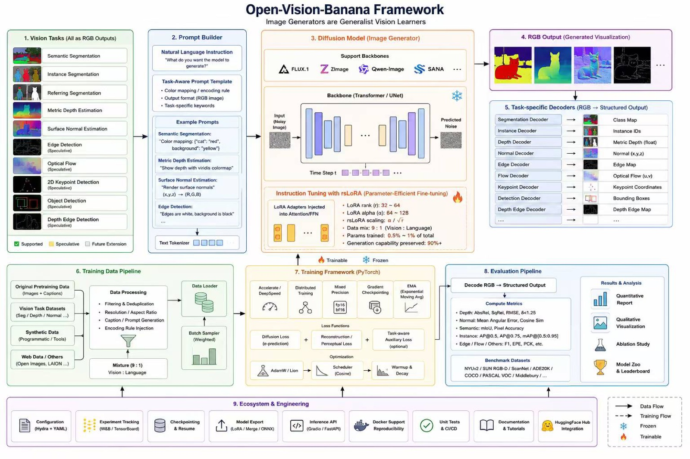

Unofficial open reproduction · work in progress
Open-Vision-Banana
Re-implementing Image Generators are Generalist Vision Learners on an open image generator and public data. One adapter, five vision tasks, the prompt picks the task — and every number below is read from a published evaluation file.
Not affiliated with, endorsed by, or verified by the paper's authors or Google DeepMind. Nano Banana Pro, the paper's in-house data and its human study are closed; nothing here reproduces them.
Method as implemented
Every vision output is an RGB image. The prompt carries the task and its colour code; a decoder turns the generated image back into depth in metres, normals or masks. Where the paper is explicit — formulas, constants, prompt strings, the Appendix A decoder — the code follows it line by line.
- Vision targetdepth · normals · semantic · instance · referring
- RGB encodingEq. 1 power transform, cube-edge colormap; legend in the prompt
- Image generatorQwen-Image-2.1 + rsLoRA, mixed with generation replay
- Decoderinverse colormap → metres; nearest legend colour; Appendix A clustering
- Metricofficial splits, native-resolution scoring, strict zero-shot
Depth is a colour, decoded to metres
λ = −3, c = 10/3, black → red → yellow → green → cyan → blue → magenta → white (paper Fig. 5, checked against the figure's metre labels). No camera intrinsics at training or test time.
Paper alignment audit
Statements the paper makes that can be checked in code. The partial items are all places the paper leaves open; the missing ones are closed (base model, in-house data, human study). Full audit
Main recipe (E1)
The paper states no optimiser, learning rate, schedule, resolution, mixing ratio or inference settings; these are repository choices, read here from the run's effective_config.json and data audit.
Where we stand
What the runs say
Ablations
Each group changes one thing. Bars are scaled within each column; the cell is the measured value on the full benchmark split. The generation proxy compares 200 GenAI-Bench generations against the untuned base's own outputs — lower means closer to the base; it is not the paper's human study.
Samples
The Qwen-Image-2.1 runs publish no images yet; experiment E5 builds that gallery with recorded prompt, seed and checkpoint. Shown here are outputs of the earlier SANA-1600M adapter trained with the same RGB interface, on held-out rows of its training manifest — not benchmark images.
Status and next steps
Next round (plan v2, #93)
- Pin down what ran: full-split evaluation of every 10k endpoint, a step-0 row on the same subset, a measured noise floor.
- Full fine-tuning learning rate: 3e-5 collapsed; scan downwards before judging capacity.
- Segmentation resolution: Cityscapes is generated on a ~256×512 canvas and scored at 1024×2048; test 768 / 1024 / native before changing the recipe.
- Depth outdoors and colormap transfer: where the cube-edge gain holds.
- Leak audit and decoder scale calibration, then the generation-preservation study.
Where the project is going
- A public checkpoint with full evaluation, metadata and checksums — the first release milestone.
- Train on SenseNova-Vision-Corpus-50M to close the gap to the paper.
- Latent-space and conditioning research on top of the baseline; it decides between a conference paper and a technical report.
- More generators, more tasks — FLUX, Z-Image, SANA and editing models under one framework; vision-centric agents later.
Framework blueprint from the first team discussion

A plan, not a result: tasks marked speculative have encoders and decoders but no training data in the repository, and the generation-preservation figure in panel 3 is a target that has not been measured.
Honest boundaries
- The paper's absolute numbers are context, not a target: Nano Banana Pro is closed and our backbone is different.
- ReasonSeg uses the original queries; the paper rewrites them with Gemini 2.5 Pro. SA-Co/Gold and normals are not scored yet.
- Metric depth is reported without scale alignment; median-aligned δ1 is kept in the evaluation files as a diagnostic only.
- Generation preservation is a pixel/perceptual proxy against the base model's own outputs, not a human pairwise study.
- Training data are public annotations and renders (Hypersim, TartanAir, ADE20K, COCO, LVIS, RefCOCO, OmniEdit); Hypersim's research-only licence carries into checkpoints.
Citation
Please cite the original paper; cite this repository for the implementation and the reproduction study.
@article{visionbanana2026,
title = {Image Generators are Generalist Vision Learners},
author = {Gabeur, Valentin and Long, Shangbang and Peng, Songyou and others},
journal = {arXiv preprint arXiv:2604.20329},
year = {2026}
}